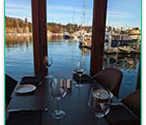
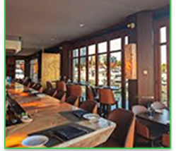

About us


At The Green Fork, we serve fresh, plant-based meals made with care. Our goal is simple — to offer healthy food that’s good for people and the planet.
Our Story
We started with one belief — that eating well should also do good.
Inspired by local produce, where sustainability and flavor meet.
Every bite tells a story of freshness and community.
Reviews
Amazing food! So fresh and full of flavor.
“Loved this dish - fresh and flavorful!” - Daniel M.
“Fresh, healthy, and so welcoming”.
At The Green Fork, we serve fresh, plant-based meals made with care. Our goal is simple - to offer healthy food that’s good for people and the planet. Every dish is crafted to bring comfort, balance, and a taste of nature.
Our Story
We started with one belief - that eating well should also do good. Inspired by local produce and simple recipes, The Green Fork grew into a space where sustainability and flavor meet.
Reviews
“Loved this dish - fresh and flavorful!” - Daniel M.
“Fresh, healthy, and so welcoming”.
Sustainability Practices
We work with local farms, use eco-friendly packaging, and reduce waste daily. Our kitchen runs on green values - fresh ingredients, mindful cooking, and a commitment to protecting the planet. daily.